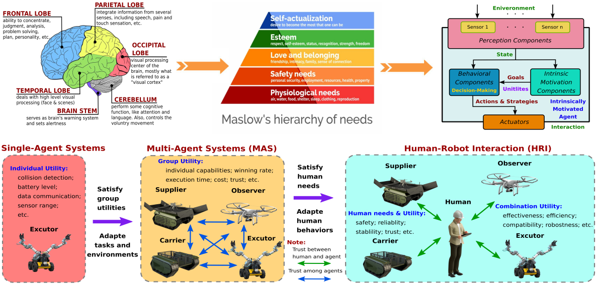
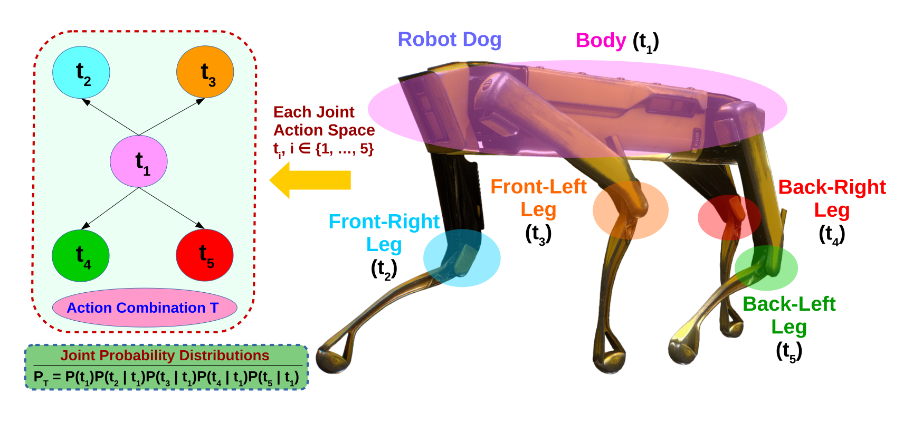
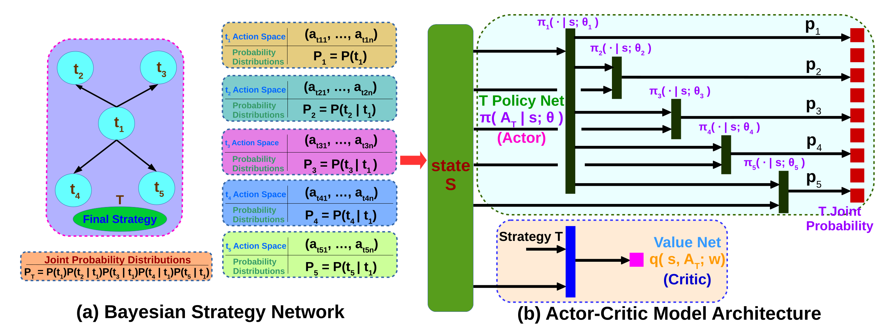
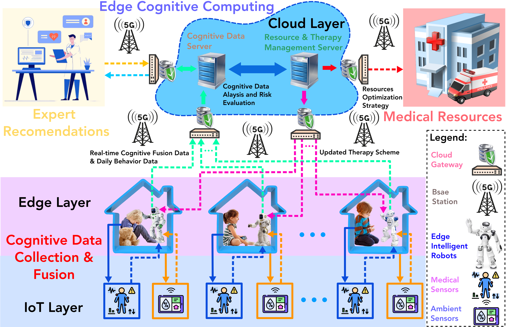
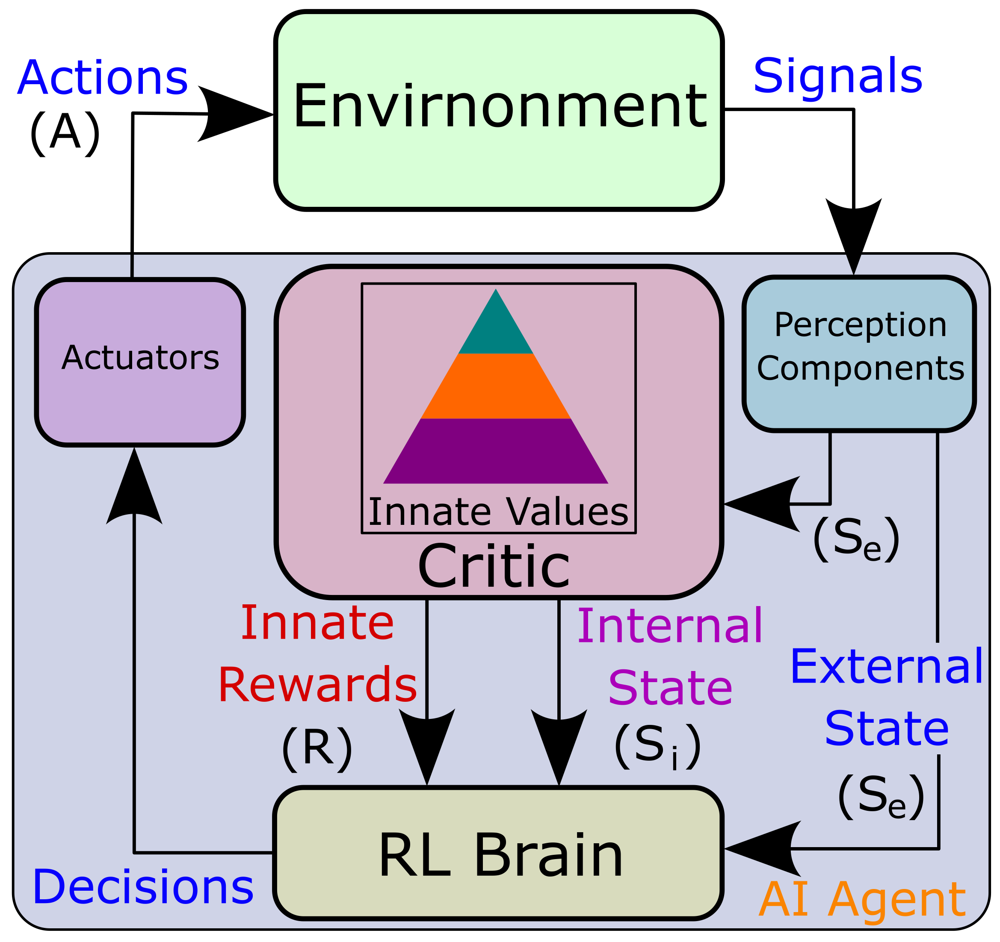
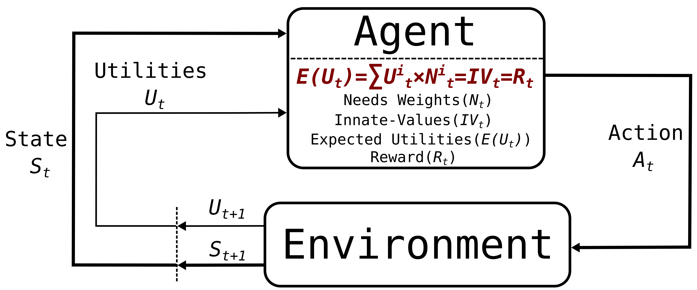

<!DOCTYPE html>
<html lang="en">
	<head>
		<meta charset="UTF-8">
		<meta http-equiv="X-UA-Compatible" content="IE=edge">
		<meta name="viewport" content="width=device-width, initial-scale=1.0,maximum-scale=1">
		
		<title>IS3R Lab</title>

		<!-- Loading logo -->
		<link rel="shortcut icon" href="images/logo/2/is3r_logo.ico">

		<!-- Loading third party fonts -->
		<link href="fonts/novecento-font/novecento-font.css" rel="stylesheet" type="text/css">
		<link href="fonts/font-awesome.min.css" rel="stylesheet" type="text/css">

		<!-- Loading main css file -->
		<link rel="stylesheet" href="style.css">
		
		<!--[if lt IE 9]>
		<script src="js/ie-support/html5.js"></script>
		<script src="js/ie-support/respond.js"></script>
		<![endif]-->

	</head>


	<body>
		
		<div class="site-content">
			<header class="site-header" data-bg-image="">
				<div class="container">
					<h1 class="page-title"><a href="index.html"> <strong>Intelligent Social Systems and Swarm Robotics Lab (IS<sup>3</sup>R)</strong></a></h1>
<!-- 					<h1 class="page-title"><a href="#"><strong>Intelligent Social Systems and Swarm Robotics Lab (IS<sup>3</sup>R)</strong></a></h1> -->

					<div class="main-navigation">
						<button class="menu-toggle"><i class="fa fa-bars"></i> Menu</button>
						<ul class="menu">
							<li class="menu-item"><a href="index.html">Home</a></li>
							<li class="menu-item"><a href="research.html">Research</a></li>
							<li class="menu-item current-menu-item"><a href="projects.html">Projects</a></li>
							<li class="menu-item"><a href="members.html">Members</a></li>
							<li class="menu-item"><a href="facilities.html">Facilities</a></li>
							<li class="menu-item"><a href="publications.html">Publications</a></li>
							<li class="menu-item"><a href="services.html">Services</a></li>
							<li class="menu-item"><a href="media.html">Media</a></li>
							<li class="menu-item"><a href="contact.html">Contact</a></li>
						</ul>
					</div>

					<div class="mobile-navigation"></div>
				</div>
			</header>

			<div class="page-head" data-bg-image="images/page_head/mrs_page_head.jpg">
				<div class="container">
					<h2 class="page-title">Projects</h2>
<!-- 					<small>Nemo enim ipsam voluptatem quia voluptas sit aspernatur aut odit aut fugit consequuntur magni </small> -->
				</div>
			</div>

			<main class="main-content">
				<div class="fullwidth-block">
					<div class="container">
						<div class="row">
							<div class="content col-md-12">
							        <h2 class="section-title">Cooperative Multi-Agent Systems Cognitive Modeling</h2>
								<ul class="event-list large">
									<li>
									    <div class="row">									    
										<div class="col-md-5">
											
										</div>
										<div class="col-md-7">
										    <h3 class="title"><a href="#"><strong>Abstract</strong></a></h3>
										    <p>The project aims to develop models for analyzing artificial intelligence (AI) robots’ (AI agents) motivations and behaviors and to understand their diverse relationships as they cooperate and adapt to the 
										       needs and behaviors of humans and other AI agents. The project’s novelty is its focus on modeling cooperative multi-agent systems (MAS) from the cognitive science perspective and investigating how they reach 
										       consensus and integrate human needs through a shared needs-oriented trust network in the interaction. The project’s impacts are significant because the proposed cooperative MAS models will help artificial social systems 
										       (like multi-robot systems and self-driving cars) integrate into human society and work harmoniously with us, supporting sustainable human development. Moreover, the success of this project could enable cognitive modeling 
										       for cooperability-aware MAS of advanced AI architectures and software, leading to new technologies and applications in the computing, communications, electronics, aerospace, transportation, agriculture, and defense industries. 
										       It will have the potential to revolutionize AI and Robotics technology.</p>
										    <p><strong>NSF Support Link for More Details: <a href="https://www.nsf.gov/awardsearch/showAward?AWD_ID=2348013&HistoricalAwards=false" target="_blank">  FRR: Cooperative Multi-Agent Systems Cognitive Modeling</a></strong></p>
										</div>
									    </div> <!-- .row -->	
									</li>
								</ul>
								
							        <h2 class="section-title">Bayesian Strategy Network based Reinforcement Learning</h2>
								<ul class="event-list large">
									<li>
									    <div class="row">									    
										<div class="col-md-5">
											
											
										</div>
										<div class="col-md-7">
										    <h3 class="title"><a href="#"><strong>A Reinforcement Learning Model based on the Bayesian Strategy Network for Robot Locomotion & Planning</strong></a></h3>
										    <p>The proposed research aims to develop a new reinforcement learning (RL) model based on Bayesian Strategy Network (BSN) for robot locomotion and planning. 
										       By combining AI and cognitive robotics technology, the model can support robots developing diverse strategies and skills to adapt to complex environments 
										       and achieve various tasks efficiently.</p>
										    <p><strong>Objective: </strong> A cognitive robotic model for robot locomotion and planning. This research will develop a novel cognitive robotic model 
											       based on BSN and Deep RL architecture to improve the convergent speed and sample efficiency. Furthermore, we will implement our model in a real 
											       robot, such as Unitree Go2 robot dog, to achieve dynamic and complex tasks. </p>
										    <p><strong>Reference Paper: <a href="https://dl.acm.org/doi/full/10.1145/3643862" target="_blank">Bayesian Strategy Networks Based Soft Actor-Critic Learning</a></strong></p>
<!-- 										    <a href="https://drive.google.com/file/d/1BNJYOhQplKQmcfe360EOr6C6UpJnOwjH/view?usp=sharing" target="blank" class="button">Syllabus</a> -->
										</div>
									    </div> <!-- .row -->	
									</li>
								</ul>
								
								<h2 class="section-title">Edge Computing based Human-Robot Cognitive Fusion</h2>
								<ul class="event-list large">
									<li>
									    <div class="row">									    
										<div class="col-md-5">
											
										</div>
										<div class="col-md-7">
										    <h3 class="title"><a href="#"><strong>A Medical Case Study in the Autism Spectrum Disorder Therapy</strong></a></h3>
										    <br />
										    <p>TBD</p>
<!-- 										    <p><a class="more-link" href="https://arxiv.org/abs/2306.09445" target="_blank"><i class="fas fa-external-link-alt"></i>Find out more</a></p> -->
<!-- 										    <a href="https://drive.google.com/file/d/1BNJYOhQplKQmcfe360EOr6C6UpJnOwjH/view?usp=sharing" target="blank" class="button">Syllabus</a> -->
										</div>
									    </div> <!-- .row -->	
									</li>
								</ul>

								<h2 class="section-title">Innate-Values-driven Reinforcement Learning (IVRL)</h2>
								<ul class="event-list large">
									<li>
									    <div class="row">									    
										<div class="col-md-5">
											
											
											
										</div>
										<div class="col-md-7">
										    <h3 class="title"><a href="#"><strong>Abstract</strong></a></h3>
										    <br />
										    <p>Innate values describe agents' intrinsic motivations, which reflect their inherent interests and preferences for pursuing goals and drive them to develop 
											    diverse skills that satisfy their various needs. Traditional reinforcement learning (RL) is learning from interaction based on the feedback rewards of 
											    the environment. However, in real scenarios, the rewards are generated by agents' innate value systems, which differ vastly from individuals based on 
											    their needs and requirements. In other words, considering the AI agent as a self-organizing system, developing its awareness through balancing internal 
											    and external utilities based on its needs in different tasks is a crucial problem for individuals learning to support others and integrate community with 
											    safety and harmony in the long term. To address this gap, we propose a new RL model termed innate-values-driven RL (IVRL) based on combined motivations' models 
											    and expected utility theory to mimic its complex behaviors in the evolution through decision-making and learning.</p>
										    <p><strong>Objective: </strong>We want to improve the IVRL further and develop a more comprehensive system to personalize individual characteristics to achieve various 
											    tasks testing in several standard MAS testbeds, such as StarCraft II, OpenAI Gym, Unity, etc. Especially in multi-object and multi-agent interaction scenarios, 
											    building the awareness of AI agents to balance the group utilities and system costs and satisfy group members' needs in their cooperation is a crucial problem 
											    for individuals learning to support their community and integrate human society in the long term. Furthermore, implementing the IVRL in real-world systems, 
											    such as human-robot interaction, multi-robot systems, and self-driving cars, would be challenging and exciting. </p>
										    <p><strong>GitHub: <a href="https://github.com/is3rlab/Innate-Values-driven-Reinforcement-Learning/tree/main?tab=readme-ov-file" target="_blank">Innate-Values-driven RL Based Cognitive Modeling</a></strong></p>
										</div>
									    </div> <!-- .row -->	
									</li>
								</ul>

							</div>
						</div>
					</div>
				</div>

			<div class="fullwidth-block">
				<div class="container">
					<h2 class="section-title">Sponsors</h2>
						<div class="client-grid">
							<div class="client">&#20&#20&#20</div>
						</div>
				</div>
			</div>
				
			</main> <!-- .main-content -->

			<footer class="site-footer">
				<div class="container">
					<div class="row">
						<div class="col-md-5">
							<div class="widget">
								<h3 class="widget-title">General Info.</h3>
								<p style="color:;font-size:18px;">PI: <a href="https://rickyang2016.github.io/" target="blank">Qin Yang</a>, Ph.D.</p>
								<p>Intelligent Social Systems and Swarm Robotics Lab (IS<sup>3</sup>R) 
									<br> Computer Science and Information Systems Department
									<br> College of Liberal Arts and Sciences
									<br> Bradley University</p>
							</div>
						</div>
						<div class="col-md-4">
							<div class="widget">
								<h3 class="widget-title">Address</h3>
								<ul class="address">
									<li><i class="fa fa-map-marker"></i> 1501 W Bradley Ave, Peoria, IL 61625</li>
									<li><i class="fa fa-building-o"></i> Bradley Hall 195</li>
									<li><i class="fa fa-phone"></i> (309)677-2459</li>
									<li><i class="fa fa-envelope"></i> is3rlab@gmail.com</li>
								</ul>
							</div>
						</div>
						<div class="col-md-3">
							<div class="widget">
								<h3 class="widget-title">Follow Us</h3>
								<table>
									<tr>
									  <td><a href="https://www.youtube.com/channel/UCq7COfQQEO4gTbWEHp9XAvQ" target="blank"></a></td>
									  <td><a href="https://github.com/is3rlab" target="blank"></a></td>
									  <td><a href="https://www.researchgate.net/lab/Intelligent-Social-Systems-and-Swarm-Robotics-Lab-IS3R-Qin-Yang" target="blank"></a></td>
									  <td><a href="https://www.linkedin.com/in/qin-yang-71ab2b94/" target="blank"></a></td>
									  <td><a href="https://twitter.com/is3rlab" target="blank"></a></td>
									</tr>
							      </table>
							</div>
						</div>
					</div> <!-- .row -->

					<p class="colophon">Copyright 2024 <strong>IS<sup>3</sup>R Lab</strong>. All right reserved</p>
				</div><!-- .container -->
			</footer> <!-- .site-footer -->

		</div>
		

		<script src="js/jquery-1.11.1.min.js"></script>
		<script src="js/plugins.js"></script>
		<script src="js/app.js"></script>
		
	</body>

</html>
